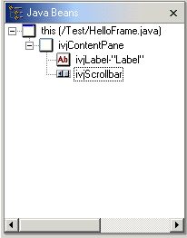

When you work in the Visual Editor for Java, you can see a tree view of all the components that are used in the class that you are composing. This is the Java Beans view that is automatically opened each time the Visual Editor is launched, unless opening the beans view is disabled in the preferences.
The selection between the entries in the Java Beans view and those in the Design view is synchronized both ways. So, if you select an item or multiple items in the Design view, they are also selected in the Java Beans view. In the Java Beans view, the icon shown for the entry is the same icon used in the palette to represent the bean type. If you have a BeanInfo class associated with the Java bean and it specifies an icon by specializing the method public Image getIcon(int),then it is not used by the Visual Editor when determining the icon for the Java Beans view.

The label is the name of the instance variable that is used in the Java code for the Java bean. For some types of Java beans, the label also contains details from the instance itself. For example, the text of a button or label. In addition to showing the structure of the existing Java beans, you can add new beans from the palette onto the Java Beans view. You can also select Java beans and delete them using the Delete key. Additionally, to manipulate the order/parenting of beans, you can drag and drop the items on the beans view.
Related concepts
Visual Editor for Java
Related tasks
Composing classes visually
Editing a visual bean